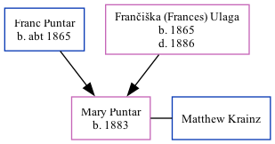

Mary Krainz (née Puntar) 1883 -
[ Home ] | [ Calendar ] | [ Surnames Index ] | [ Family History ]The child of Franc Puntar (a weaver and church caretaker) and Frančiška (Frances) Ulaga, Mary Puntar, the great-great-aunt of Michele Copp (née Phillips), was born in Cemicnik, Slovenia in 18831. She was married to Matthew Krainz.
During her life, she lived in Austria1. In 1913 she traveled from Trieste to New York, New York, USA, arriving 28 Feb.
She died in Pennsylvania, USA.
Parents
- Franc Eske was born c. 1865
- Frančiška (Frances) was born in 1865
Citations
- New York Passenger Lists, 1820-1957 Online publication - Provo, UT, USA: The Generations Network, Inc., 2006.Original data - Passenger Lists of Vessels Arriving at New York, New York, 1820-1897; (National Archives Microfilm Publication M237, 675 rolls); Records of the U.S. Customs Service, R (Marital Status: Single; Relative Relation to Head: Father; Relative Relation to Head: Friend)
Family Tree
Generated by ged2site. Last updated on Sep 18, 2024